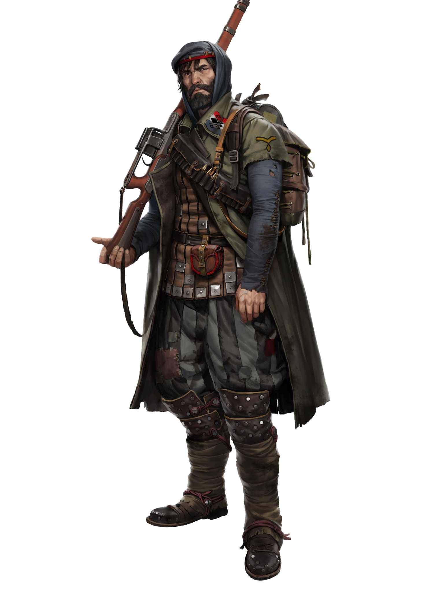

CLAN DOSSIER
Resistance
Freedom, self-determination, resurrection.
Clans of the Rhône pp. 17–19

MOVEMENT
Briefing
Farewell. One last time, the old woman caresses the cheek of her younger son. Her eyes blaze with pride when the boy turns around and runs across the knee-high field of wheat, carrying his crammed backpack. There, on the side of the narrow road, the Resistance recruiters weight, silhouetted against the cloudy gray sky.
Three weeks hence, they will reach Toulouse together, and the boy will no longer be a son amongst many, but a son of Franka. He will follow in the footsteps of his older brother, will carry the three colors of the nation and fight to get his battle scars. He will sing the hymns of the Bygones, will go to war with his comrades and find an honorable death fighting the Aberrants, just like his father, his grandfather and all the generations before him. His fate is the fate of Franka.
Movement
Northeastern front: The Resistance fighters are caught up in a guerrilla war. Rearguard battles, constant readiness, mobility at all times, and the complete dependency on the Spitalian supply line; it all wears down even the best of fighters.
Southern front: Better initial situation. The Resistance manifests in a movement that is like a jolt through the Frankan society. Every victory against the Pheromancers bolsters the self-assurance and will of the people to join the Resistance or send sons and daughters to the front.
Toulouse: Freedom, self-determination, resurrection. Here, utmost importance is attached to those slogans. Books, devotional objects, relics – every Bygone finding studied, restored and archived by the Savants, the lore keepers of the Resistance, nourishes the heroic past of a nation where Cults were meaningless. The land was the people, the people were the land. This new direction of the Resistance leads straight towards the old glory the people long for.
In accordance with that goal the Resistance must ensure that the knowledge of ancient history is distributed throughout Franka. Grand Savant Pélat du Casse is well aware that tradition is based on lore, and by educating and updating that base of cultural information, so too can traditions be altered and nationalistic fires reignited. Long before new Cadets hear about the operations of some far off Preservist or Sublime they’re already singing songs about the fallen heroes of the Resistance who died fighting for a free Franka, or listening to the Savants preach about the works of art and culture that have been torn from their grasp. The spark has been struck.
Meanwhile, the generals are striving for complete independence. In Toulouse, information gathered by spies is collected and compared to that of other Cults, formations and attack tactics are evaluated, and new strategies are devised. The lessons learned become part of the strategy for new campaigns which in turn are a beacon in the dark for those Clans still free.
Trade with the Cults thrives, the warehouses of the Resistance are crammed with war supplies. For quite a while, the logisticians in Toulouse have not only been coordinating the supplies for their troops, but also for the civilian population. Structures arise, workers are hired, and administrations are established. However, the Resistance does not produce anything. As a war machine, it is completely dependent on donations from the population, from the goodwill and the faith of the Frankans who believe that this war of liberation will be able to free them from the yoke of the Aberrants once and for all.
Hope
Months ago, Armand Malpierre, Maréchal de Franka, appointed a new generation of Générals to whom he entrusted the command of unusually large sections of Resistance forces. Their marching orders did not lead them to the front, but to all major cities of Franka: Perpignan, Toulon, Montpellier, Aquitaine, Bassham and more. Their job was to build war camps, form tight relations with the ruling Clans, and help maintain order. In addition, they must maintain combat readiness at all times, and encourage it in the people. There will come a day when all of Franka must become the Resistance.
Equality
Wherever the Resistance has good connections to the local ruling Clans, criminals are often not punished if they are willing to swear a solemn oath and join the movement. After three years of service, they can leave the Resistance fully rehabilitated, but this has to date never occurred. Most of the criminals die before they complete their indentured service, and the rest decide to stay forever, fighting to free their home and their people.
THE CLAN
Hierarchy & Ranks
Select any rank to read its prerequisites, effect, and equipment.
THE CLAN